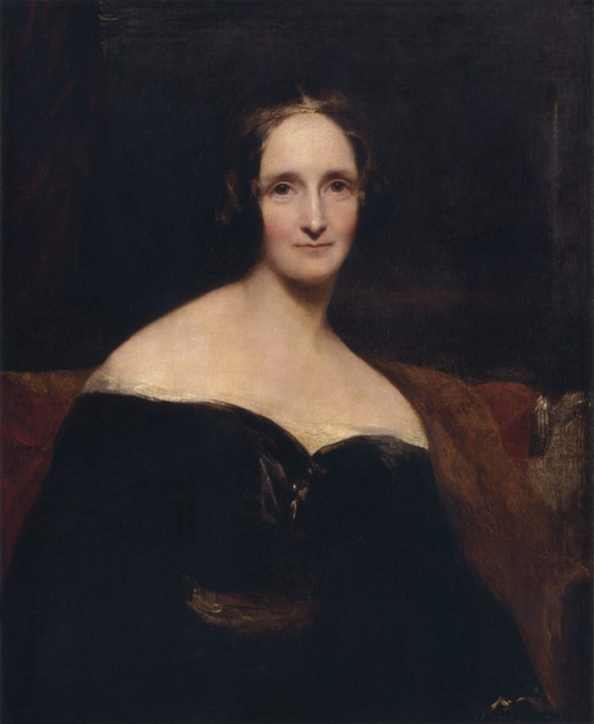
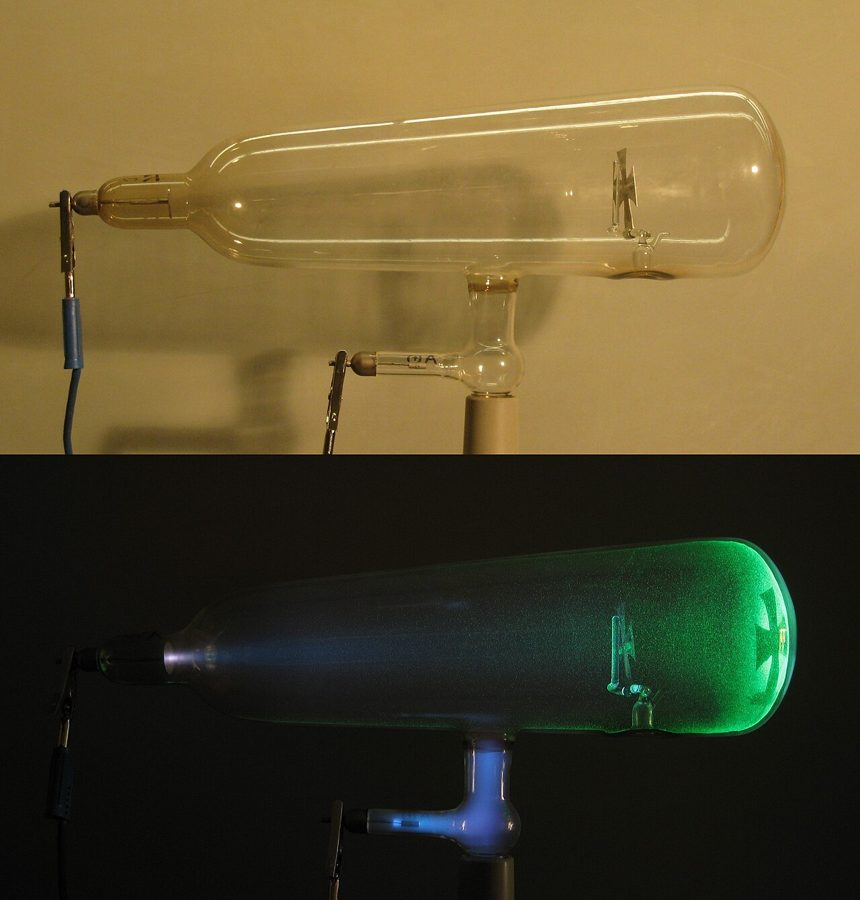

这一章在做什么
这一章几乎全是费曼在讲：做研究要保持「玩」的心态。他举了三个自己玩过的「假如」：半次求导、改掉空间和时间的维数、电荷不是整数。作者的旁白只做注解。
斜体段落是录音实录，句子零碎，抓住每段在玩哪一个「假如」就不会丢。最后一段是作者的决定。
背景：作者默认你知道的事
洛斯阿拉莫斯（Los Alamos）
费曼在洛斯阿拉莫斯的工作证照片，约 1943 年。第 7 段讲的就是这个时期的他。
United States Army，公有领域，维基共享资源
美国新墨西哥州的一处高地。二战时美国在这里建了秘密实验室造原子弹，也就是曼哈顿计划。费曼当时二十多岁，在理论部负责一个计算小组。
第 7 段说的「有人在算一个复杂的方程」就发生在这里。
阁楼和 hope chest
丹麦画家 Poul Friis Nybo 的油画，画题就是「女孩查看她的 hope chest」。
Poul Friis Nybo，公有领域，维基共享资源
美国独栋房子的屋顶下有一层阁楼（attic），旧东西都堆在那儿。hope chest 是旧时姑娘出嫁前用的大木箱，一件件攒下床单、桌布，留着婚后用。
第 8 段把有创造力的头脑比作阁楼：学过的东西先存进箱子，说不定哪天翻出来就用上了。
第 8 段引的三个人

玛丽·雪莱，Richard Rothwell 绘，1840 年展出。
Richard Rothwell，公有领域，维基共享资源
柴可夫斯基Tschaikovsky俄国作曲家。书里用的是旧式拼法，现在通常拼 Tchaikovsky。
玛丽·雪莱Mary Shelley英国作家，《弗兰肯斯坦》（科学怪人）的作者。
斯蒂芬·斯彭德Stephen Spender20 世纪英国诗人。
三句话是一个意思：新东西不是凭空来的，是从已经存着的材料里长出来的。作者用音乐家和作家来说明这不只是物理的事。
《物理评论》（Physical Review）
美国物理学会办的期刊，物理学里最有分量的刊物之一。第 19 段说盖尔曼怕挨批，没敢把第一篇夸克论文投给它，而是发在一份名气小一些的刊物上。
史实：那篇 1964 年的论文登在欧洲的 Physics Letters 上。
这一章的物理，先用中文过一遍
一、半次求导
导数（derivative）是函数的变化率。求导是一种运算：输入一个函数，输出另一个函数。做两遍是二阶导数，做 n 遍是 n 阶导数，n 是整数。
费曼中学时问：n 能不能是二分之一？也就是找一种运算 H，连做两遍正好等于求一次导。
用编程的话说：已知函数 d，求一个函数 h，使 h(h(f)) 等于 d(f)。
本站示意图。第 7 段说「做两遍来检验」，就是看下面这条路走完是不是等于上面那一步。
书里费曼说这是他中学时「发明」的。史实另说：数学家从 17 世纪末就讨论过这个问题，今天它叫分数阶微积分（fractional calculus）。费曼是自己重新想出来的，这不妨碍他讲的道理：玩出来的东西后来在洛斯阿拉莫斯用上了。
二、换一个维数
维数（dimension）就是独立方向的个数：一维只有前后，二维加上左右，三维再加上下。我们的世界是三维空间加一维时间。
费曼玩的是：假如空间只有二维，原子会怎样？他提到谱线（spectral lines）：每种原子发出的光只有特定的几种颜色，像条形码，是原子的「指纹」。维数一变，这套指纹也跟着变。
氢原子的可见光谱线。别的元素是另外几条线，位置各不相同。
Jan Homann，CC BY-SA 3.0，维基共享资源
接着他走得更远：假如时间有两个维度？时间只有一条线时，任何两件事都能排出先后。时间变成一个平面，「先后」就不一定说得清了。
本站示意图，图解第 12 段作者的那句旁白。这只是一个思想游戏，现实里时间只有一维。
三、电荷不是整数

阴极射线管（克鲁克斯管）。上：没通电。下：通电后，阴极射线打在玻璃上发绿光。19 世纪末的物理学家就是在这种管子里认出了电子。
D-Kuru，CC BY-SA 3.0 at，维基共享资源
第 18 段是作者补的历史：所有测到的电荷都是某个最小电荷的整数倍，这个最小单位就是一个电子带的电量。一百年里没有人见过半个、三分之一个。
盖尔曼的夸克（quark）理论却要求夸克带 +2/3 或 −1/3 个单位的电荷。这在当时很难让人接受，但只有这样理论才自洽。
本站示意图。夸克各自带分数电荷，但三个凑在一起总是整数，所以我们看到的粒子都是整数电荷。这正是第 20 段费曼佩服的地方。
第 15–17 段里的「三种粒子」指当时的三种夸克：上（up）、下（down）、奇异（strange）。K 介子是一种含奇异夸克的粒子。
| 英文 | 中文 | 一句话 |
|---|
| calculus | 微积分 | 研究变化率和累积量的数学，牛顿时代的发明。 |
| derivative | 导数 | 函数的变化率。second / third / nth derivative 是二阶、三阶、n 阶导数。 |
| integer | 整数 | 形容词是 integral（整数的），反义是 nonintegral、fractional（分数的）。 |
| operation | 运算 | 对一个对象做的一种操作，这里指「吃进函数、吐出函数」。 |
| numerical method | 数值方法 | 不求公式解，直接用数字一步步算出近似答案。 |
| physical law | 物理定律 | 自然界遵守的规则。费曼的游戏就是改掉其中一条。 |
| dimension | 维，维度 | two-dimensional 是二维的。space / time dimension 是空间维、时间维。 |
| Euclid’s plane | 欧几里得平面 | 中学几何里那张无限大的平面。 |
| spectral lines | 谱线 | 原子发出的特定颜色的光，每种原子一套。 |
| radiate | 辐射，发出 | 原子发光就是在 radiate。 |
| temporal order | 时间先后顺序 | temporal 是「时间的」。 |
| quark | 夸克 | 组成质子、中子的更小的粒子，名字是盖尔曼起的。 |
| proton | 质子 | 原子核里带正电的粒子。 |
| subnuclear particles | 亚核粒子 | 比原子核更小一层的粒子，如质子、中子、介子。 |
| K-meson | K 介子 | 一种不稳定的粒子，也叫 kaon。 |
| electric charge | 电荷 | elementary charge 是基本电荷，即最小的那一份。 |
| integral multiple | 整数倍 | multiple 是倍数。 |
| cathode rays | 阴极射线 | 真空管里从负极飞出的电子流。 |
| ion | 离子 | 带了电的原子。 |
| magnitude | 大小，量值 | 只说多大，不管正负。 |
| space-time | 时空 | 三维空间加一维时间，合称四维时空。 |
词与短语
词条按在书里出现的顺序排。斜体小字是它所在的那句话里的几个词，方便你在纸质书上找到。
outlook
… fun, keeping a youthful outlook. It …
看待事物的态度，心态
第一句没有主语和谓语，只是三个并列的 -ing 短语，像列标题。
stay open to
… for Feynman, staying open to all …
对……不设限，愿意接受
open 是心态上的「敞开」。
play
… the creative process is play. At …
玩（名词）
不是戏剧，也不是动词。下一句 At least for some scientists. 是口语里补的半句，书面要接在前一句后面。
hard to maintain
… It is hard to maintain as …
（这份玩心）很难保持
It 指上一句的 play。后面 But you shouldn’t 省略了 get less playful：不该变得不爱玩。
mathematical type of problems
… of entertaining mathematical type of problems, …
数学类的问题
这是口语，书面形式是 problems of a mathematical type。
little worlds
… little worlds of this kind that …
一个个小天地
指那些数学小问题，每个都是一个可以钻进去玩的小世界。
from time to time
… work in from time to time. …
时不时，偶尔
derivative
… formula for the derivative of a …
导数
数学义。不是「衍生物」，也不是金融里的「衍生品」。
and so forth
… two, three, and so forth. …
等等，依此类推
同 and so on。第 13 段还有一次。
a “half” derivative
… what about a “half” derivative? I …
「半次」导数
what about …? = 那……呢？
operation
… I wanted an operation that when …
运算
不是手术。这一句是口语长句，骨架是 an operation that … gives you a new function，中间插了 when you do it to a function。
in those days
… calculate it in those days. I …
那时候，当年
or anything
… to check it or anything. I …
……之类的
口头禅，没有实义。这句连用两个 anything，是边想边说，书面会删掉。
only later … did I
… Only later, when I was in …
直到后来我才……
only 开头要倒装：did I start，不是 I started。
start over
… did I start over again. And …
从头再来一遍
over 这里是「重新」，不是「结束」。
think up
… definition that I thought up in …
想出来，琢磨出来
it would work
… school was right. It would work. …
它行得通
work = 管用。前一句 And found out 没有主语，口语里承前省了 I。
correspond to
… form they had corresponded to my …
正好对应于
numerical
… had invented a numerical operation for …
数值的
用数字硬算，区别于用公式推。
nifty
… I did a nifty numerical method …
漂亮的，巧的
口语，夸一个办法又妙又好用。第 17 段 that’s nifty 同义。
lots of stuff
… well, not everything, but lots of stuff …
很多东西
这是口语：先说 Everything，马上改口。书面形式是 Many things turn out to be useful.
turn out to be
… of stuff turns out to be useful. …
结果是，后来发现是
play it out
… You just play it out.
一路玩下去，看它走到哪儿
out 表示「到底、做完」。
attic
… mind has a vast attic. That …
阁楼
见上面背景。
intriguing
… that intriguing but seemingly pointless paper …
勾起人兴趣的
paper
… but seemingly pointless paper you spent …
论文
可数名词 a paper 是一篇论文，不是纸。
decipher
… spent a week deciphering as a …
费劲地读懂
本义是破译密码。
postdoc
… deciphering as a postdoc, that offhand …
博士后
postdoctoral 的简称，拿到博士之后的短期研究职位。
offhand remark
… that offhand remark of a colleague, …
随口说的一句话
offhand = 没多想、顺嘴的。
hope chest
… are stored in hope chests somewhere …
嫁妆箱
chest 是大箱子，不是胸。见上面背景。
pick through
… to be picked through and applied …
翻拣一遍
在一堆东西里翻找能用的。
transcend
… creative process that transcends physics. For …
超出……的范围
意思是：不只物理如此。
germ
… The germ of a future composition …
萌芽，苗头
不是细菌。composition 这里是乐曲，不是作文。后面的 soil（土壤）接着这个种子的比喻。
consistent with
… would have to be consistent with some …
和……不矛盾
物理里常用：改了一条，不能和别的定律打架。
work out
… have to also work out all of …
推算出来
不是锻炼。work out the consequences = 把后果一条条推出来。
spectral lines
… their spectral lines, for example. I …
谱线
前面 And there are very, very interesting phenomena like … 是口语，边说边举例。
go through
… I went through a large number …
一项一项过了一遍
characteristic
… referring to the characteristic light that …
特有的
这里是形容词：这种原子独有的。
dissertation
… For my dissertation, I, too, had …
博士论文
同一句的 how this varies with dimension，this 指原子发的光。
all the way from … to …
… the way from one to infinite …
从……一路到……
强调跨度大：从一维一直到无穷维。
for some of us
… for some of us, a new …
对我们当中某些人来说
作者自嘲：多一个方向，就多一种迷路的可能。
envision
… brought us to envision similar alternative …
在脑子里设想
alternative worlds = 另一种样子的世界。
the strange place he went next
… the strange place he went next …
他接下来讲到的怪地方
不是真去了哪儿，是话题走到了哪儿。
timeline
… plane, rather than a timeline—there would …
时间线，时间轴
tracked on a plane = 在一个平面上标出位置。
a kind of a model
… made a kind of a model …
一个模型似的东西
这是口语，书面形式是 a kind of model。这段后面全是半句话，比如 What happens and so forth.，都是接着前一句往下补。
picture
… which we could picture this, so …
在脑子里想出画面
动词。
figure out
… we could figure out just what …
弄明白
What if?
… the time, ask, “What if?” and …
假如……会怎样？
整章的关键词。第 22 段把它当名词用：a “what-if”，一个假设。
not bother to
… you don’t bother to change these. …
不去费那个事
bother 这里不是「打扰」。
it takes imagination
… It takes imagination to find the …
这需要想象力
it takes + 名词 = 需要……。第 20 段出现两次。
be coy
… Feynman is being coy here …
故意不点名，卖关子
coy 本义是忸怩、欲说还休。
building blocks
… are the building blocks for subnuclear …
基本构件
本义是积木。
fit into the pattern
… wouldn’t fit into the pattern. No …
套得进这个规律
No good.
… into the pattern. No good. What …
不行，行不通
这一整段是费曼在模仿别人当时的思路，所以全是短句和感叹。
nonintegral
… the particles were nonintegral, though? Ah! …
非整数的
句尾的 though = 不过。
account for
… That would account for it! Hey, …
能解释它
和账户无关。
Big excitement!
… understood before! Big excitement! So now …
大家兴奋得不得了！
口语省略句，书面形式是 There was great excitement.
come in multiples of
… seemed to come in multiples of …
总是以……的整数倍出现
come in = 以某种形式存在，像「这鞋有三个颜色」的 comes in three colors。
indivisible
… existed fundamental, indivisible particles that carried …
不可再分的
coin
… elementary charge, and coined the word …
造出（一个新词）
本义是铸币。
cognizant of
… Cognizant of possible negative reaction, Murray …
意识到
很书面的词，等于 aware of。
tentative
… Murray was tentative in his early …
试探性的，不把话说死
referee
… from its editors and referees, and …
审稿人
不是球场裁判。期刊请同行来审论文，这些人叫 referee。
of lesser prestige
… a journal of lesser prestige. Feynman, …
名气差一等的
release yourself from
… To release yourself from the proposition …
把自己从……里解放出来
proposition = 命题、说法。这句的主语是整个 To release … charge，到 that took imagination 才用 that 重提一次，是口语。
built in
… a certain conservatism built in. We …
天生自带的
程序员熟悉的 built-in。意思是人的思路里自带一份保守。
you figure
… So you figure what everything is …
你就会认定
figure 作动词 = 估摸、认为。第 22 段 I figured 同义。
come across
… that’s there that you came across …
偶然碰上
这句是口语，连着三个破折号边想边补。意思：做完了，发现一个没料到的东西。
So what if …?
… had four dimensions? So what if string …
就算……又怎样？
多了一个 So，语气变成「那又如何」，不是在提问。
值得停下来的句子
Everything, well, not everything, but lots of stuff turns out to be useful. You just play it out.
— 第 7 段，费曼。本站译：什么都……嗯，不是什么都，但很多东西后来都用得上。你就一路玩下去。
典型的口语：开口说了 Everything，觉得说过头了，用 well 刹车，改成 lots of stuff。真正的主语是 lots of stuff，谓语是 turns out to be useful。
这是半次求导那个故事的结论，也是这一章的中心：玩的时候不用问有什么用。
It takes imagination to say that charges may not be the way you see them all the time.
— 第 20 段，费曼。本站译：敢说电荷也许不是你一直看到的那个样子，这需要想象力。
It takes … to do 句型，it 是形式主语。the way you see them = 你看到的那个样子，all the time 修饰 see。
费曼起初不信夸克，这句是他后来对盖尔曼的评价。两人平时互相较劲，所以这句夸奖有分量。
检查一下理解
先在心里答，再点开。答错的那题，回书里把对应段落再读一遍。
1. 费曼中学时就会算「半次导数」了吗？
不会。他当时只是给出了定义，算不出任何东西，也没法检验。上大学后重新捡起来，才确认当初的定义是对的。真正派上用场是在洛斯阿拉莫斯。
2. 第 7 段「做两遍来检验」是什么意思？
半次导的定义就是连做两遍等于普通求导。所以把他的数值方法连用两次，看结果是不是和直接求一次导一样，一样就说明方法没错。
3. 第 15–17 段里，说「假如万物由三种粒子组成」的是谁？那一串感叹句是费曼在讲自己的发现吗？
是盖尔曼，费曼故意只说「有人」。那串感叹句是费曼在演别人当时的思路，不是他自己的发现。第 19 段还说，费曼一开始是怀疑夸克的人之一。
4. 第 10 段括号里那句关于迷路的话，是在说谁？
作者在说自己。每多一个维度就多一个方向，对他这种人就多一种迷路的可能。是一句自嘲的玩笑，和物理无关。
5. 第 19 段最后一句里「最初的犹豫」是谁的？结果怎样？
是费曼的。他起初不信夸克理论，后来理论成立了，这段经历反而让他更佩服盖尔曼能想到这一步。
6. 最后一段作者的态度是什么？他在问问题吗？
两个问句都是反问。意思是：何不放下「时空只有四维」这个成见？弦理论要多六维，那又怎样？他决定把弦理论当成一个值得继续追的「假如」。